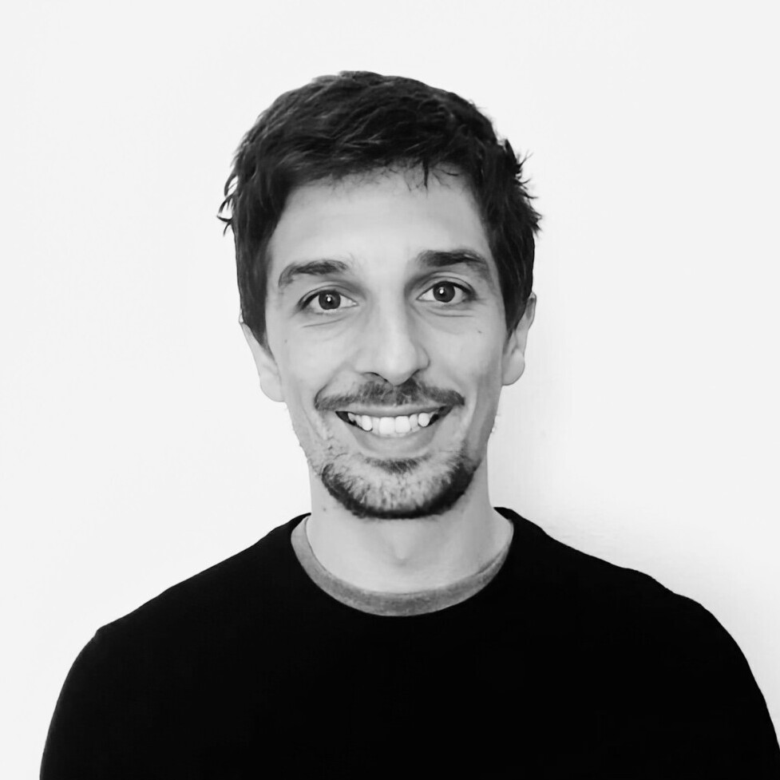

Hi there! I'm Jeff.
I wear many hats: I'm a researcher, lecturer, and trauma-informed coach working at the intersection of economics, ecology, and human development.
My work bridges the personal and the systemic. I'm curious about both the inner and the outer structural forces that shape us, the micro and the macro, and how to support lasting positive transformation.
At the core I have a deep commitment to greater connection, resonance, and a sense of possibility, both in ourselves and in the world around us.
Academic Research
My academic work centers on identifying and addressing the structural economic barriers to achieving social and ecological justice. I study how power imbalances and hierarchical relations reinforce ecological degradation and constrain our ability to shift toward more equitable and sustainable futures.
In my applied work with institutions such as the World Bank, the Banque de France, and the Agence Française de Développement, I assess nature-related financial risks and sustainable transition strategies. I use scenario analysis and systems thinking to support more coherent, resilient, and regenerative responses to today’s most pressing global challenges.
View publications →NARM Coaching & Counseling
I also work with individuals to help them reconnect to their inner truth, build resilience, and live with greater freedom, presence, and purpose.
As a certified Level 2 NARM therapist, I guide people through the deeper work of reconnecting to what has been fragmented and reclaiming what is already whole. My approach is heart-centered and somatically informed, grounded in curiosity, compassion, and a deep respect for each person’s innate capacity for change.
Though this path may seem distinct from my academic life, they are deeply connected. Both reflect a single commitment: to see more clearly, feel more deeply, and move with greater integrity through a complex world. I believe wholeheartedly that lasting transformation, whether personal or planetary, begins with honest connection.
Learn more →